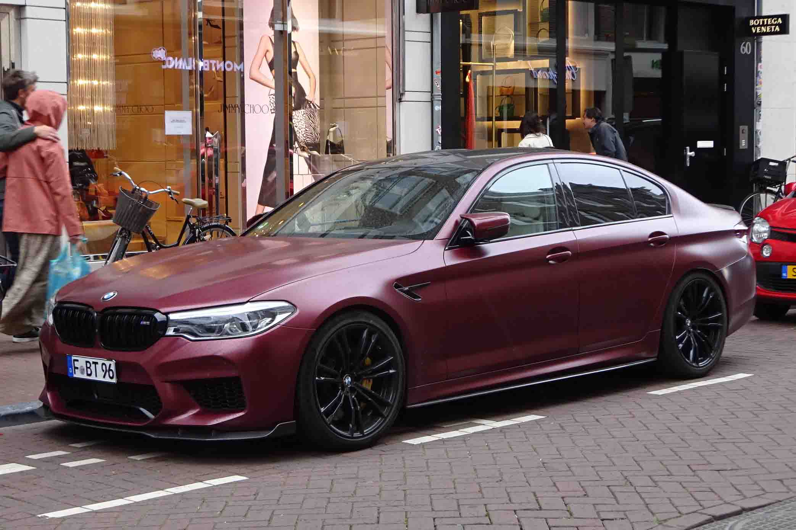
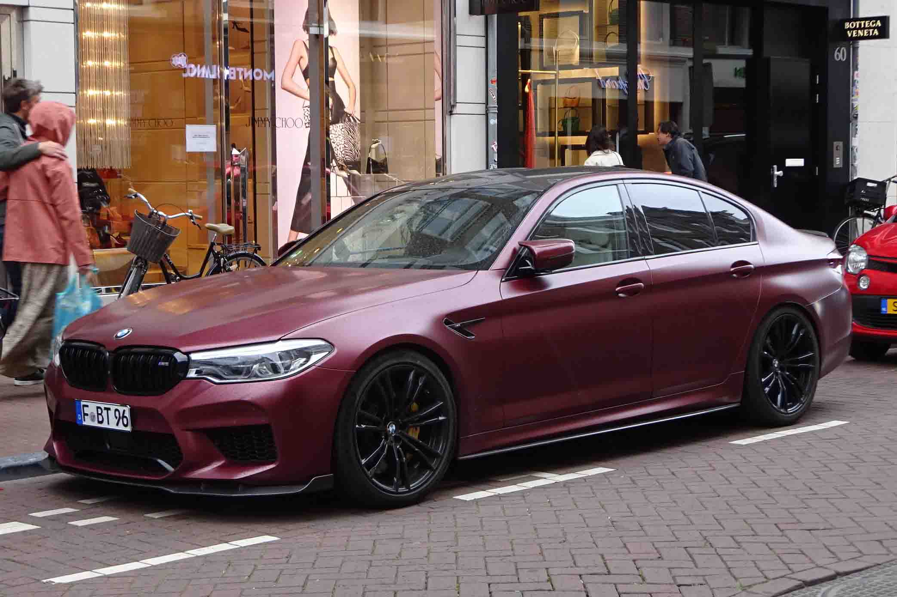

Model:
Specific Model:
Engine Type:
Transmission:
HORSEPOWER (BHP @ RPM):
TORQUE (LB-FT @ RPM):
ACCELERATION 0 - 60 MPH SEC:
TOP SPEED (MPH):
COMBINED (MPG):
Audio System:
3 Series
330i xDrive Sedan
2.0-liter BMW TwinPower Turbo inline 4-cylinder
8-speed Sport Automatic transmission with Sport and Manual shift modes
255 @ 5000-6500
295 @ 1550-4400
5.4
155
155
HiFi Sound System with 205-watt digital amplifier and 10 speakers
M3
M3 Sedan
3.0-liter BMW M TwinPower Turbo inline 6-cylinder
6-speed manual transmissio
473 @ 6250-6250
406 @ 2650-6130
4.1
180
19
Harman Kardon Surround Sound Audio System with 464-watt amplifier and 16 speakers
 

Model:
Specific Model:
Engine Type:
Transmission:
HORSEPOWER (BHP @ RPM):
TORQUE (LB-FT @ RPM):
ACCELERATION 0 - 60 MPH SEC:
TOP SPEED (MPH):
COMBINED (MPG):
Audio System:
5 Series
530i xDrive Sedan
2.0-liter BMW TwinPower Turbo inline 4-cylinder
8-speed Sport Automatic transmission with Sport and Manual shift modes
248 @ 5200-6500
257 @ 1450-4800
5.8
155
26
HiFi Sound System with 205-watt digital amplifier and 12 speakers
M5
M5 Sedan
4.4-liter BMW M TwinPower Turbo V-8
8-speed M Sport Automatic transmission with Sport and Manual shift modes
600 @ 6000-6000
553 @ 1800-5690
3.2
N/A
17
Harman Kardon® Surround Sound Audio System with 464-watt amplifier and 16 speakers
Model:
Specific Model:
Engine Type:
Transmission:
HORSEPOWER (BHP @ RPM):
TORQUE (LB-FT @ RPM):
ACCELERATION 0 - 60 MPH SEC:
TOP SPEED (MPH):
COMBINED (MPG):
Audio System:
8 Series
840i xDrive
3.0-liter BMW TwinPower Turbo inline 6-cylinder
8-speed Sport Automatic transmission with Sport and Manual shift modes
335 @ 5000-6500
368 @ 1600-4500
4.6
155
24
Harman Kardon® Surround Sound Audio System with 464-watt amplifier and 16 speakers
M8
dM850i xDrive
4.4-liter BMW M TwinPower Turbo V-8 engine
8-speed Sport Automatic transmission with Sport and Manual shift modes
523 @ 5500-6000
553 @ 1800-4600
3.2
185
19
Harman Kardon® Surround Sound Audio System with 464-watt amplifier and 16 speakers